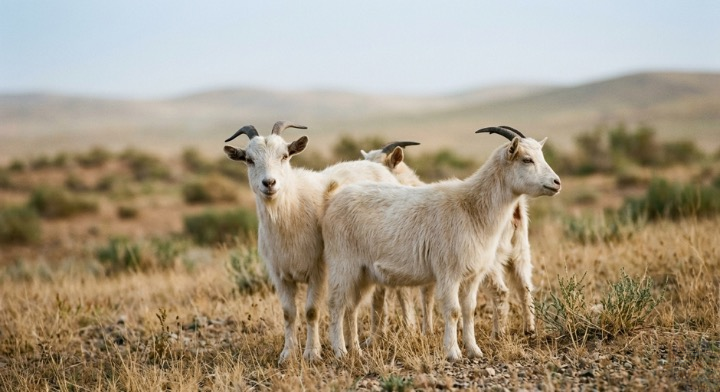

Atelier MAUDÉ — La matière
La matière
La matière
avant tout.
Nous ne vendons pas des manteaux. Nous vendons des années de port. Tout commence par le choix de la fibre.
Nous ne vendons pas des manteaux. Nous vendons des années de port. Tout commence par le choix de la fibre.
Chez MAUDÉ, tout commence par la matière — avant la coupe, avant la silhouette. Le cachemire de Mongolie-Intérieure et la laine ne sont pas choisis parce qu'ils sonnent bien sur une étiquette, mais parce qu'ensemble ils rendent possible le vêtement que nous voulons créer : structuré sans rigidité, doux sans fragilité, pensé pour durer.

Le cachemire provient du duvet des chèvres Capra Hircus, élevées sur les hauts plateaux de Mongolie-Intérieure. À cette altitude, les écarts de température extrêmes — jusqu'à –40°C en hiver — poussent ces chèvres à développer un sous-poil d'une finesse particulière.
Chaque chèvre ne produit qu'une très faible quantité de duvet chaque année. C'est cette rareté, combinée à la qualité de la fibre, qui explique la valeur du matériau.
Nous travaillons avec des partenaires établis dans cette région depuis des décennies, ce qui nous permet de suivre la fibre depuis son origine plutôt que de l'acheter anonymement sur un marché.

La qualité d'une fibre de cachemire se mesure en microns — l'unité qui exprime son diamètre. Celle que nous utilisons se situe autour de 15 microns, soit trois à quatre fois plus fine qu'un cheveu humain, qui en mesure environ 70.
Cette finesse n'est pas qu'un chiffre : c'est elle qui détermine le toucher du tissu, sa légèreté, et la façon dont il se pose sur le corps plutôt que de peser dessus. Nous travaillons avec du cachemire Grade A, une sélection qui exclut d'emblée les fibres les plus grossières.
La récolte se fait par peignage du sous-poil, et non par tonte — un geste plus lent, qui préserve la longueur naturelle de la fibre et respecte l'animal.
Le 100 % cachemire est spectaculaire au toucher — mais il est fragile : porté au quotidien, il perd vite sa tenue. La laine apporte une résistance et une structure que le cachemire seul ne peut garantir dans un manteau porté saison après saison.
Notre mélange à parts égales — 50 % laine, 50 % cachemire de Mongolie-Intérieure — n'est donc pas un compromis entre deux matières, mais une décision : obtenir la douceur de l'une sans renoncer à la tenue de l'autre. Ce n'est pas la matière qui sonne le plus luxueuse sur une étiquette qui compte, mais celle qui correspond au vêtement que nous voulons construire.
La récolte
Au printemps, les éleveurs peignent délicatement le sous-poil des chèvres à la main. Le duvet est ensuite trié, nettoyé et peigné pour séparer les fibres les plus longues et les plus fines — seules celles-ci entreront dans la composition de nos manteaux.
Le filage & tissage
Les fibres sont filées, teintes dans des bains minutieusement contrôlés, puis tissées avec la laine sélectionnée pour créer notre mélange 50/50. La tension des fils, la densité du tissu, le grammage final sont vérifiés à chaque étape.
La confection
Le tissu est ensuite coupé et cousu par nos artisans à Suzhou. Chaque pièce est contrôlée individuellement avant expédition. Un manteau MAUDÉ ne quitte l'atelier que lorsqu'il est prêt.

Suzhou est une ville où le travail du textile se transmet de longue date. C'est là que nos ateliers partenaires filent la fibre, la tissent, puis coupent et assemblent chaque manteau.
Ces trois grandes étapes — récolte, filage et tissage, confection — se déclinent en réalité en plus de 40 opérations distinctes avant qu'un manteau MAUDÉ ne soit prêt à voyager. Nous travaillons avec les mêmes ateliers depuis le début, dans une relation directe plutôt qu'une commande anonyme.
Découvrir La Maison, et la place de Suzhou dans notre histoire →
La même matière ne donne pas la même silhouette selon la façon dont elle est travaillée. Sa tenue permet le volume ample de Huā Long sans perdre sa structure. Sa souplesse accompagne le mouvement et la verticalité de Yūn Long. Sa légèreté rend possible la silhouette plus courte et plus libre de Yūn Court.
Trois manteaux, une seule matière — pensée différemment à chaque fois.
MAUDÉ ne part pas d'une tendance pour choisir ensuite un tissu. C'est l'inverse : la matière est le point de départ, et la collection reste volontairement resserrée pour que chaque pièce ait le temps d'être pensée avec ce niveau d'attention.
C'est aussi pourquoi nous vendons en direct, sans intermédiaire : pour que la valeur reste dans la matière et le geste qui la transforme, plutôt que dans une marge.
« On ne croit pas aux pièces qu'on porte deux saisons. On croit aux manteaux qu'on ne veut plus enlever. »Aude & Mathilde, fondatrices d'Atelier MAUDÉ
Pour l'entretenir dans la durée, notre guide d'entretien du cachemire.
Voir les silhouettes La Maison